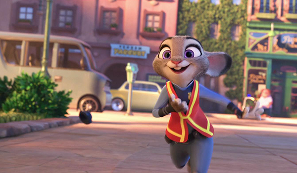
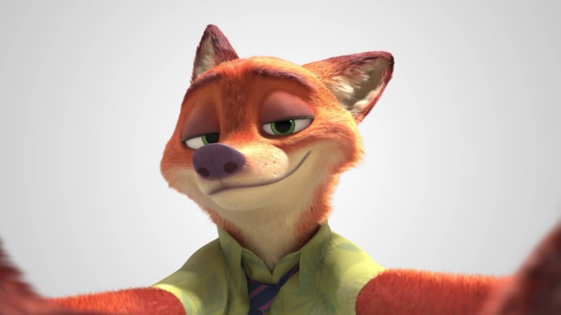
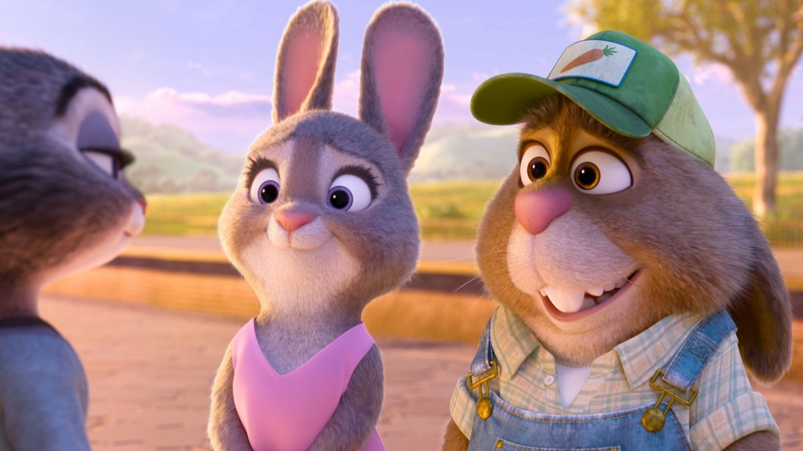
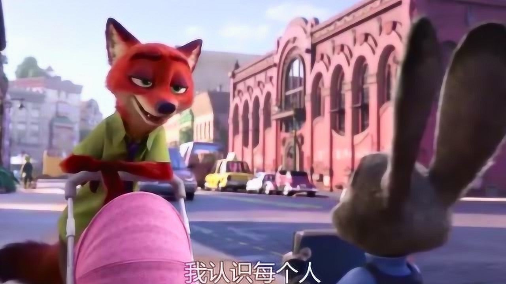
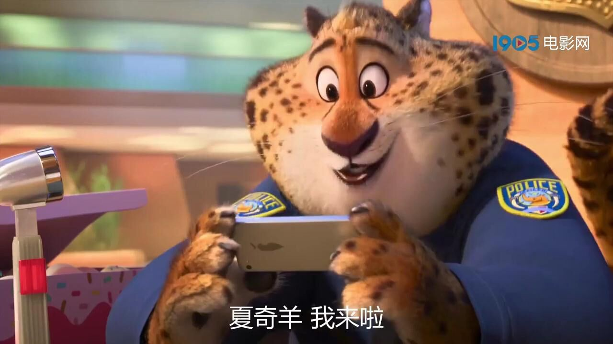
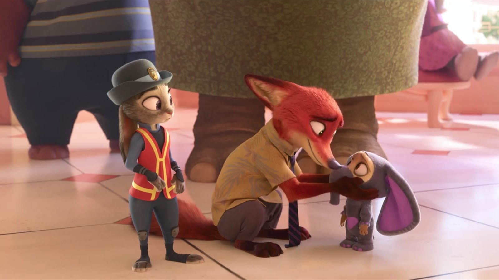

.jpg)

动物城是一个充满活力和多样性的现代化大都市，由不同的区域组成，每个区域都适合不同种类的动物居住。市中心是繁华的商业区，雨林区适合热带动物，撒哈拉广场是沙漠动物的家园，冻土镇则是北极动物的栖息地，而小啮齿镇则是为小型动物特别设计的迷你城市。每个区域都经过精心设计，展现了动物城的多元化和包容性。
主要角色介绍

朱迪·霍普斯
一只充满梦想和正义感的兔子警官，是动物城历史上第一位兔子警察。她勇敢、聪明、坚持不懈，用自己的行动证明了"任何人都能成就任何事"的信念。

尼克·王尔德
一只机智狡猾的狐狸，最初是个街头小贩，后来成为朱迪的搭档和最好的朋友。他聪明、幽默，拥有敏锐的观察力和出色的推理能力。

其他重要角色
动物城中还有许多令人印象深刻的角色，包括慢吞吞的树懒闪电、威严的狮子市长、狡猾的羊副市长等，每个角色都为故事增添了独特的色彩。
精彩剧情亮点

紧张刺激的破案过程
影片以一起神秘的失踪案为线索，朱迪和尼克联手展开调查。剧情跌宕起伏，充满了悬念和反转，让观众跟随主角一起解开谜团。

温馨感人的友情故事
朱迪和尼克从最初的互不信任，到逐渐了解彼此，最终成为最好的搭档和朋友。他们之间的友情是影片最动人的部分之一。

幽默风趣的对话
影片中充满了机智幽默的对白，特别是树懒闪电的慢动作场景，成为了经典笑点，让观众在紧张的情节中也能开怀大笑。
电影主题思想
打破偏见与刻板印象
影片深刻探讨了偏见和刻板印象的问题。通过不同动物之间的互动，展现了如何打破固有的偏见，看到每个个体的真实价值。朱迪作为兔子警官，打破了"兔子不能当警察"的偏见；尼克作为狐狸，也证明了狐狸并非都是狡猾的。
追求梦想的勇气
"任何人都能成就任何事"是影片的核心主题。无论你是什么物种，无论别人怎么说，只要你有梦想并为之努力，就能实现自己的目标。朱迪的坚持和努力，激励着每一个有梦想的人。
多元共融的社会
动物城是一个多元化的社会，不同物种的动物在这里和谐共处。影片展现了包容、理解和尊重的重要性，倡导建立一个更加公平、包容的社会环境。
友情与信任的力量
影片强调了友情和信任的重要性。朱迪和尼克之间的友谊，证明了真正的朋友会相互支持、相互理解，共同面对困难。这种真挚的情感是影片最温暖的部分。
创作背景
《疯狂动物城》是迪士尼动画工作室于2016年推出的3D动画电影，由拜伦·霍华德和里奇·摩尔联合执导。影片的创作灵感来源于导演对现代都市生活的观察和对动物世界的想象。
制作团队花费了五年时间精心打造这个充满想象力的世界。他们深入研究了不同动物的生活习性，并将这些特点巧妙地融入到角色的设计中。动物城的每一个区域都经过精心设计，反映了不同动物的生活环境和特点。
影片的制作技术达到了当时动画电影的最高水准，无论是角色的表情、动作，还是场景的细节，都展现了迪士尼动画工作室的精湛技艺。影片不仅在视觉上令人震撼，在故事和主题上也具有深刻的意义。
动物城场景探索